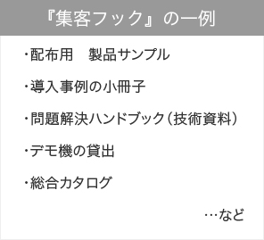
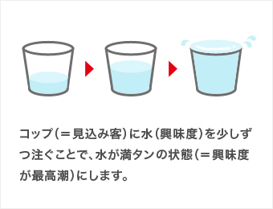
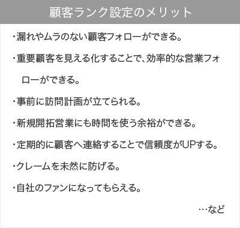

成功ノウハウ
BtoBマッチングサイトを運営し、企業のマーケティングを
支援するイプロスの成功ノウハウをご紹介します。
BtoBマッチングサイトを運営し、企業のマーケティングを
支援するイプロスの成功ノウハウをご紹介します。
月間8万件の商談機会を生み出すイプロスが熟知する、BtoB企業の「売れる仕組み」
BtoB企業が「売れる仕組み」を構築する必要性（背景など）4ステップマーケティングの概要と有用性BtoB企業が「売れる仕組み」を構築する必要性（背景など）4ステップマーケティングの概要と有用性BtoB企業が「売れる仕組み」を構築する必要性（背景など）4ステップマーケティングの概要と有用性BtoB企業が「売れる仕組み」を構築する必要性（背景など）4ステップマーケティングの概要と有用性BtoB企業が「売れる仕組み」を構築する必要性（背景など）4ステップマーケティングの概要と有用性BtoB企業が「売れる仕組み」を構築する必要性（背景など）4ステップマーケティングの概要と有用性BtoB企業が「売れる仕組み」を構築する必要性（背景など）4ステップマーケティングの概要と有用性BtoB企業が「売れる仕組み」を構築する必要性（背景など）4ステップマーケティングの概要と有用性BtoB企業が「売れる仕組み」を構築する必要性（背景など）4ステップマーケティングの概要と有用性BtoB企業が「売れる仕組み」を構築する必要性（背景など）4ステップマーケティングの概要と有用性BtoB企業が「売れる仕組み」を構築する必要性（背景など）4ステップマーケティングの概要と有用性BtoB企業が「売れる仕組み」を構築する必要性（背景など）4ステップマーケティングの概要と有用性
4つのマーケティングステップ
「売れる仕組み」を構築し、成約確率を高めます
マーケティングを意識していない企業は「販売」のみに着目し、集客や育成、顧客化についてはなかなか目が向かないものです。
しかし、この４つのマーケティングステップを意識･実践することで、自社が持っている数多くの潜在的な⾒込み客を⾒つけ出し、効率的に売上につなげることができます。
売れる仕組みのきっかけは、「見込み客」を集めることから
見込み客を集める必要性と、見込み客とのマッチングを得意とするイプロスの特長集客フックとイプロスの活用紹介（イプロスのカタログ掲出など）見込み客を集める必要性と、見込み客とのマッチングを得意とするイプロスの特長集客フックとイプロスの活用紹介（イプロスのカタログ掲出など）見込み客を集める必要性と、見込み客とのマッチングを得意とするイプロスの特長集客フックとイプロスの活用紹介（イプロスのカタログ掲出など）見込み客を集める必要性と、見込み客とのマッチングを得意とするイプロスの特長集客フックとイプロスの活用紹介（イプロスのカタログ掲出など）見込み客を集める必要性と、見込み客とのマッチングを得意とするイプロスの特長集客フックとイプロスの活用紹介（イプロスのカタログ掲出など）見込み客を集める必要性と、見込み客とのマッチングを得意とするイプロスの特長集客フックとイプロスの活用紹介（イプロスのカタログ掲出など）見込み客を集める必要性と、見込み客とのマッチングを得意とするイプロスの特長集客フックとイプロスの活用紹介（イプロスのカタ

見込み客の興味度を高め、購買意欲を高めます。別名「ナーチャリング」
見込み客の育成（見込み客の興味度を高める情報提供の考え方）育成の手法とメリット（イプロスのメルマガ紹介）見込み客の育成（見込み客の興味度を高める情報提供の考え方）育成の手法とメリット（イプロスのメルマガ紹介）見込み客の育成（見込み客の興味度を高める情報提供の考え方）育成の手法とメリット（イプロスのメルマガ紹介）見込み客の育成（見込み客の興味度を高める情報提供の考え方）育成の手法とメリット（イプロスのメルマガ紹介）見込み客の育成（見込み客の興味度を高める情報提供の考え方）育成の手法とメリット（イプロスのメルマガ紹介）見込み客の育成（見込み客の興味度を高める情報提供の考え方）育成の手法とメリット（イプロスのメルマガ紹介）見込み客の育成（見込み客の興味度を高める情報提供の考え方）育成の手法とメリット（イプロスのメルマガ紹介）見込み客の育成（見込み客の興味度を高める情報提供の考え方）育成の手法とメリット（イプロスのメルマガ紹介）

自動的に売れる環境づくりは「集客・育成」の精度を高めることから
見込み客の育成（見込み客の興味度を高める情報提供の考え方）育成の手法とメリット（イプロスのメルマガ紹介）見込み客の育成（見込み客の興味度を高める情報提供の考え方）育成の手法とメリット（イプロスのメルマガ紹介）見込み客の育成（見込み客の興味度を高める情報提供の考え方）育成の手法とメリット（イプロスのメルマガ紹介）見込み客の育成（見込み客の興味度を高める情報提供の考え方）育成の手法とメリット（イプロスのメルマガ紹介）見込み客の育成（見込み客の興味度を高める情報提供の考え方）育成の手法とメリット（イプロスのメルマガ紹介）見込み客の育成（見込み客の興味度を高める情報提供の考え方）育成の手法とメリット（イプロスのメルマガ紹介）見込み客の育成（見込み客の興味度を高める情報提供の考え方）育成の手法とメリット（イプロスのメルマガ紹介）見込み客の育成（見込み客の興味度を高める情報提供の考え方）育成の手法とメリット（イプロスのメルマガ紹介）
アフターフォローを効率化するための顧客ランク設定
見込み客の育成（見込み客の興味度を高める情報提供の考え方）育成の手法とメリット（イプロスのメルマガ紹介）見込み客の育成（見込み客の興味度を高める情報提供の考え方）育成の手法とメリット（イプロスのメルマガ紹介）見込み客の育成（見込み客の興味度を高める情報提供の考え方）育成の手法とメリット（イプロスのメルマガ紹介）見込み客の育成（見込み客の興味度を高める情報提供の考え方）育成の手法とメリット（イプロスのメルマガ紹介）見込み客の育成（見込み客の興味度を高める情報提供の考え方）育成の手法とメリット（イプロスのメルマガ紹介）見込み客の育成（見込み客の興味度を高める情報提供の考え方）育成の手法とメリット（イプロスのメルマガ紹介）見込み客の育成（見込み客の興味度を高める情報提供の考え方）育成の手法とメリット（イプロスのメルマガ紹介）見込み客の育成（見込み客の興味度を高める情報提供の考え方）育成の手法とメリット（イプロスのメルマガ紹介）
